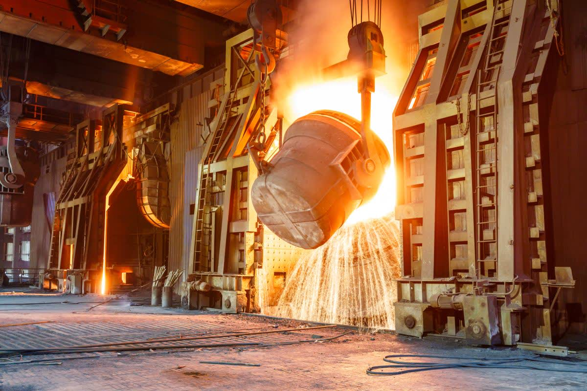

Adityapur, Jamshedpur, Jharkhand | PAN India Supply | Exports
PK INDUSTRIES
Casting Powder and SMS Consumables Manufacturer
PK INDUSTRIES manufactures and supplies SMS Consumables and CCM Raw Material including Casting Powder, Nozzle Filling Compound (NFC), Castables, Mortar, Refractory Monolithic products, and Ladle Covering Compound (Radex) from Jharkhand for PAN India supply and Exports.
Casting Powder: Zero Slag Carryover Target | Zero Breakouts Target | Low Consumption | Super Lubrication
NFC: High Free Opening | Low Lancing | No Choking | Fast Flow
Castables: Longer Lining Life | High Strength | Thermal Shock Resistance
Mortar: Strong Bonding | Crack Control | Hot Strength | Fast Joint Setting
Radex: Low Heat Loss | Fast Coverage | Stable Temperature Holding
